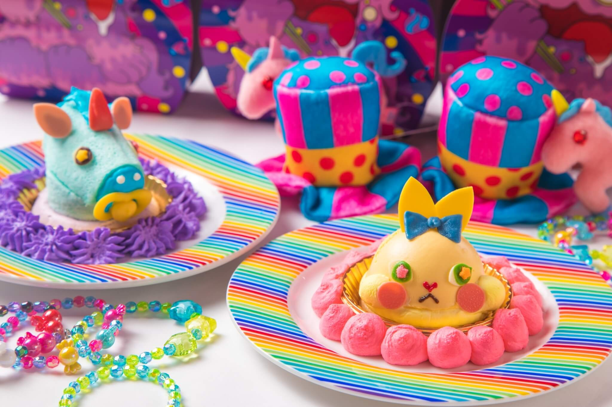
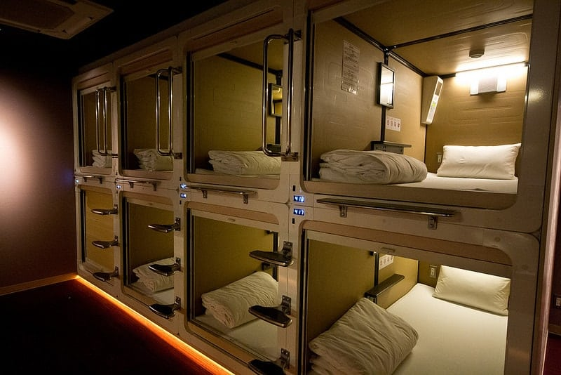
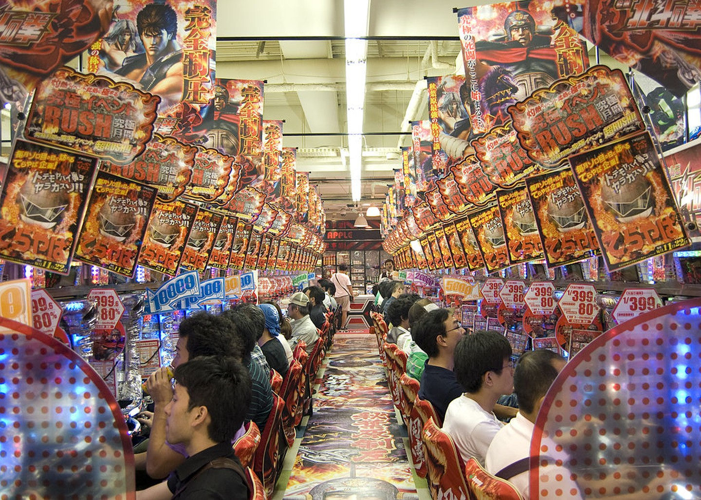

Tokyo post
12 June 2020, by AhmedTokyo’s reputation for the weird and zany is widely known. So there’s no better place than here to get off the beaten path and try something new. Get out there and check out some of the most unusual experiences Tokyo has to offer.
The Most Unusual Experiences in Tokyo
Dance with kawaii monsters
At the Kawaii Monster Cafe near Takeshita Street, you’ll meet the kawaii monsters who personify the spirit of Harajuku and the subcultures that once flourished there. Take your seat in one of four uniquely themed rooms and dine on any number of crazy rainbow concoctions, from pasta and cake to an alchemist’s drink. At the heart of the restaurant is an enormous carousel where the stage show takes place, and one lucky audience member is invited to join in each time.
Kawaii Monster Cafe
Sip lattes with owls
Tokyo is famous for its animal cafés , where people can enjoy the benefits of spending time with pets without all the commitment. It seems there’s something for everyone, from cool reptiles and quiet bunnies to the more familiar house pets. But dogs and cats are so mainstream, so why not grab a drink with an enormous bird of prey instead at one of Tokyo’s owl cafes?

owl cafe
Stay in a capsule hotel
Capsule hotels have been around for decades, but their bare bones approach to accommodation still intrigues visitors from all over the globe. Whether you’re looking for a classic capsule experience or something more luxurious, Tokyo has one of these minimalist hotels with your name on it.
capsule hotel
Visit a maid café
Maid cafés are a dime a dozen in Akihabara , Tokyo’s manga and anime culture center. Walk along the main drag and let the touts dressed in uniform show you the way, or just stroll along until you find one that catches your eye. Maid cafés are a fun, safe and totally PG, if weird, experience for all ages and genders.
Catch dinner and a robot show
Shinjuku’s Robot Restaurant is everything you would expect from a night out in Tokyo. The idea is dinner and a show, but with a twist: some of the performers just happen to be robots. The restaurant is true to its theme everywhere except the menu, from the metallic and brightly colored décor to the adorable robot souvenirs you can pick up on the way out.

robot restaurant
Pachinko ’til dawn
Pachinko is a wildly popular game in Japan, so it isn’t difficult to find a pachinko parlor at which to try your luck. These quirky gambling dens are immediately recognizable from the loud noise and music spilling out into the street. The game is set up like a slot machine. Players sling small steel balls into the playing field and hope they’ll fall into the right cup for a payout. But if you’re wary of gambling the night away, you can try out no-risk pachinko at ordinary gaming arcades.
Pachinko game center
In conclusion
Tokyo is attractive city to visit it have a lot of things you can do, and have a lot of places to enjoy with delicious food.
“Tokyo would probably be the foreign city if I had to eat one city’s food for the rest of my life, every day. It would have to be Tokyo, and I think the majority of chefs you ask that question would answer the same way.” ―Anthony Bourdainthere is a lot of reasons to visit tokyo here is some reasons :
- The Manners
- The Fashion
- The Cuisine
- The Fast Transit
- The Temples, Shrines, and Gardens